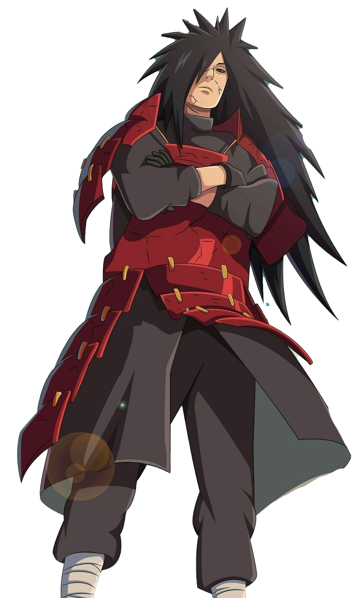
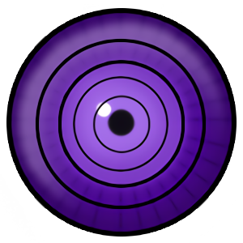

Madara

1. Eternal Mangekyō Sharingan

-
By transplanting his brother Izuna's eyes, Madara awakened the Eternal Mangekyō Sharingan, removing blindness and significantly boosting his ocular abilities.
-
This allowed him to use Susanoo at its highest level.
2. Susanoo

-
A massive, humanoid chakra avatar capable of extreme offense and defense.
-
Madara’s Perfect Susanoo was so powerful that it could cut through mountains with a single slash
3. Rinnegan

-
Near the end of his life, Madara awakened the Rinnegan, the ultimate dojutsu.
-
With it, he could use the Six Paths Techniques, summon meteors, and even revive himself.
4. Ten-Tails Jinchūriki Powers